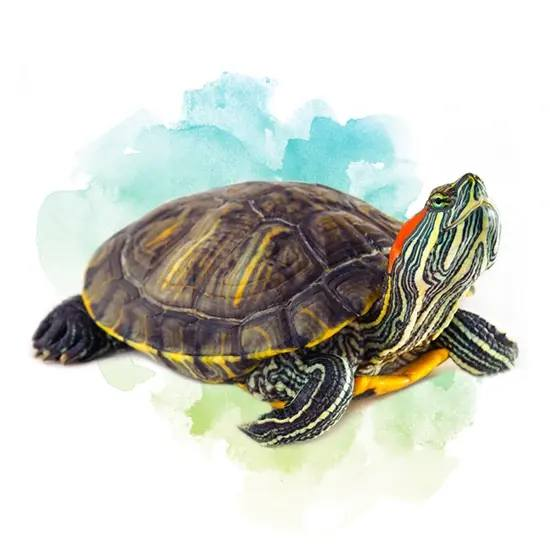
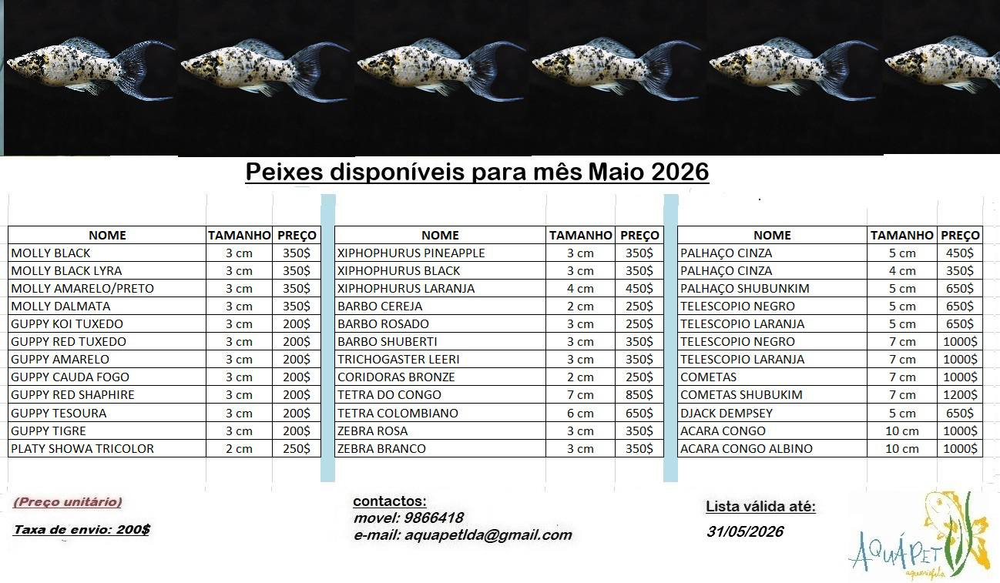
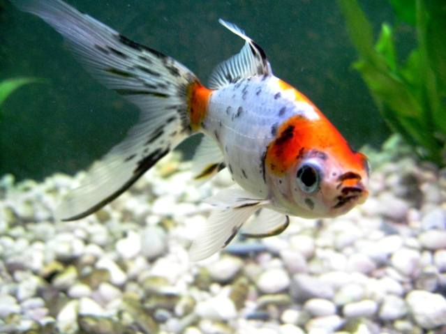
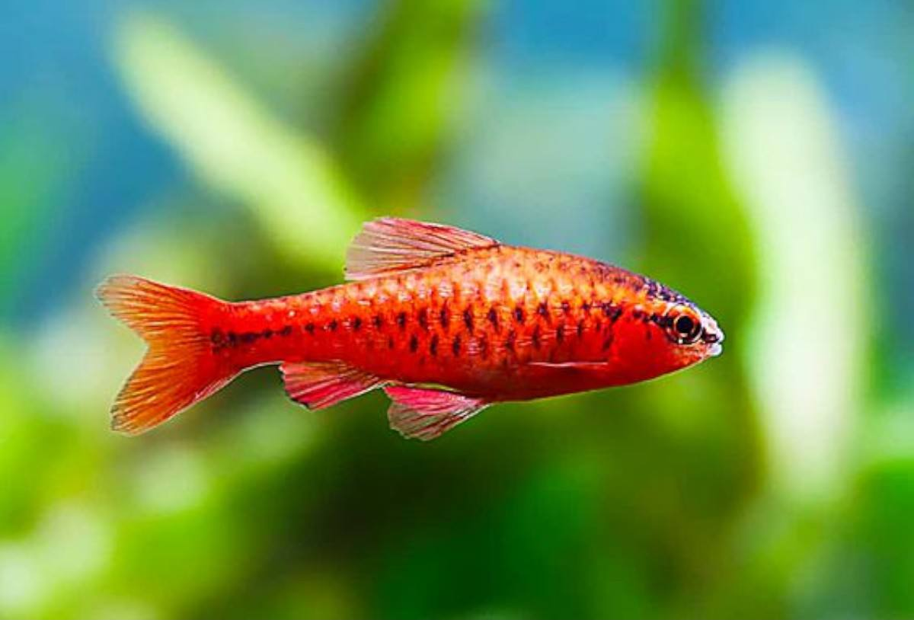
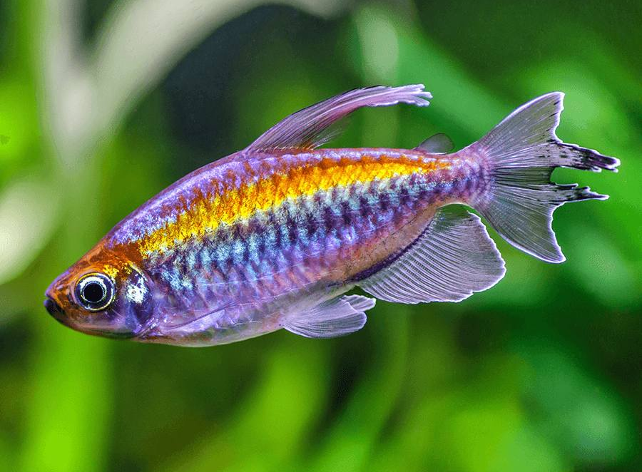
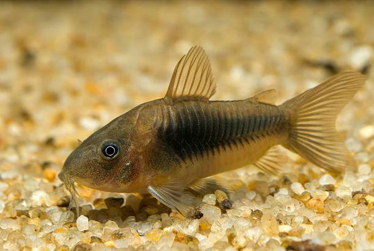
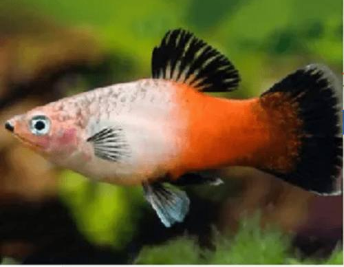
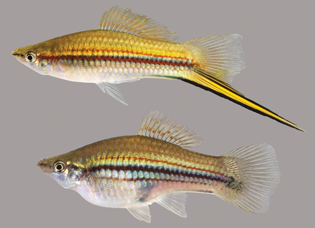
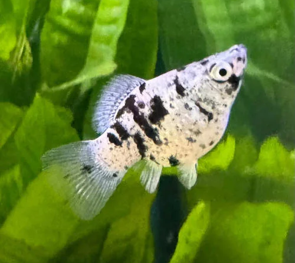
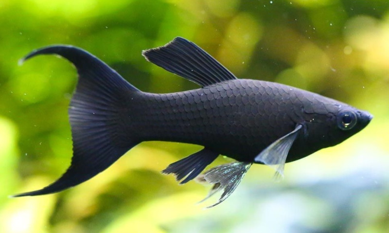

Tartaruga de Orelha Vermelha
Características principais:
Vive em água doce
Alimenta-se de plantas e insetos
Muito popular como animal de estimação
Conheça a seleção de animais aquáticos apresentada no site original da AquaPet.

Fazemos envios para todo o país mediante pagamento de uma taxa. Confirme previamente as condições e a disponibilidade.

Características principais:
Vive em água doce
Alimenta-se de plantas e insetos
Muito popular como animal de estimação

Características principais:
Vive em aquários e lagos ornamentais
Necessita de água limpa
Peixe calmo e decorativo

Características principais:
Cores misturadas
Peixe muito ativo
Vive bem em aquários grandes

Características principais:
Peixe pequeno e ativo
Vive melhor em grupo
Ideal para aquários comunitários

Características principais:
Vive melhor em grupos de pelo menos 5 ou 6 peixes
Alimentação ração para peixes tropicais e de pequenos insetos
Prefere aquários com plantas e esconderijos

Características principais:
Prefere aquários com plantas, espaço para nadar e iluminação moderada
Deve ser mantido em cardumes (6 ou mais)
Aceita alimentação variada

Características principais:
Vive no fundo do aquário
Deve ser mantido em grupos de pelo menos 5
Alimenta-se de pastilhas de fundo, ração afundante, pequenos vermes e alimentos congelados

Características principais:
Ideal para aquários comunitários, Muito sociável
Fácil de cuidar, recomendado para iniciantes
Aceita alimentação variada

Características principais:
Muito resistente e fácil de cuidar
Vive bem em aquários comunitários
Aceita alimentação variada

Características principais:
Vive bem em aquários comunitários
Fácil de cuidar, ideal para iniciantes
Aceita alimentação variada

Características principais:
Muito ativo e resistente
Ideal para aquários comunitários
Aceita alimentação variada
Esta tabela organiza os animais apresentados. Os preços não foram fornecidos nos ficheiros originais, pelo que não são inventados.
| N.º | Animal / produto | Preço |
|---|---|---|
| 01 | Tartaruga de Orelha Vermelha | Consultar disponibilidade |
| 02 | Peixe-dourado telescópio | Consultar disponibilidade |
| 03 | Palhaço Shubunkin | Consultar disponibilidade |
| 04 | Zebra Danio | Consultar disponibilidade |
| 05 | Barbo Cereja | Consultar disponibilidade |
| 06 | Congo Tetra | Consultar disponibilidade |
| 07 | Corydora Bronze | Consultar disponibilidade |
| 08 | Platy Mickey Mouse | Consultar disponibilidade |
| 09 | Xiphophorus hellerii | Consultar disponibilidade |
| 10 | Molly Dálmata | Consultar disponibilidade |
| 11 | Molly Preto Lyra | Consultar disponibilidade |